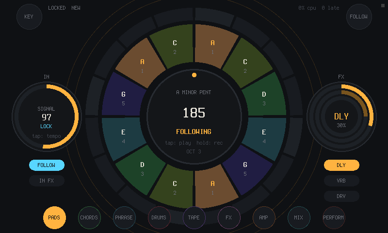
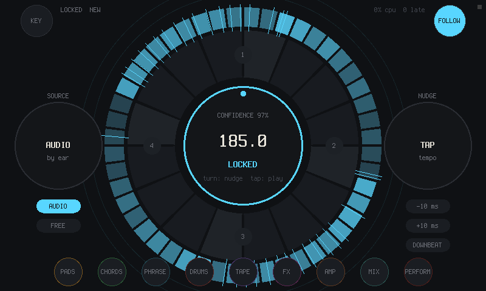
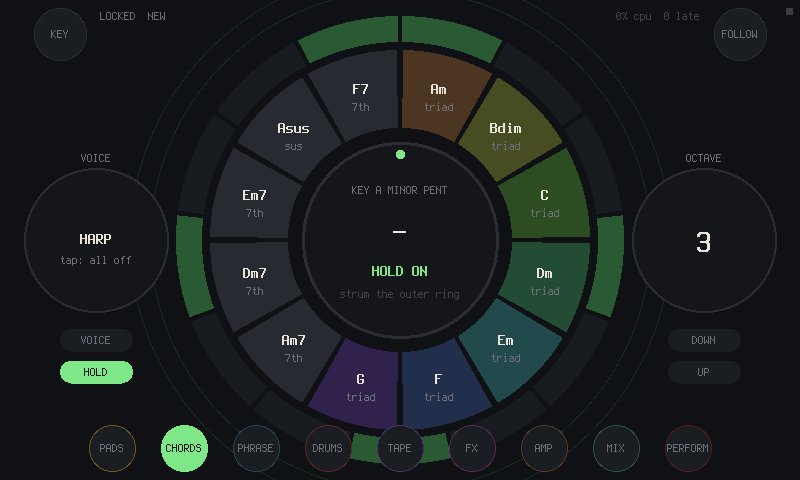
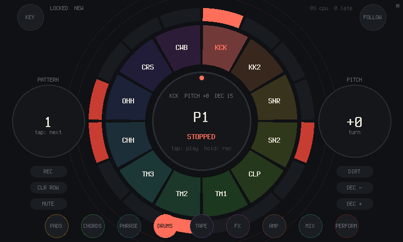
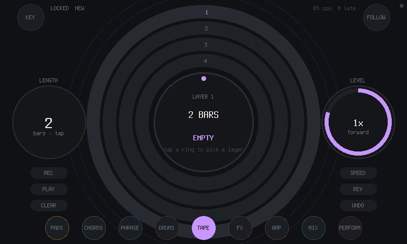
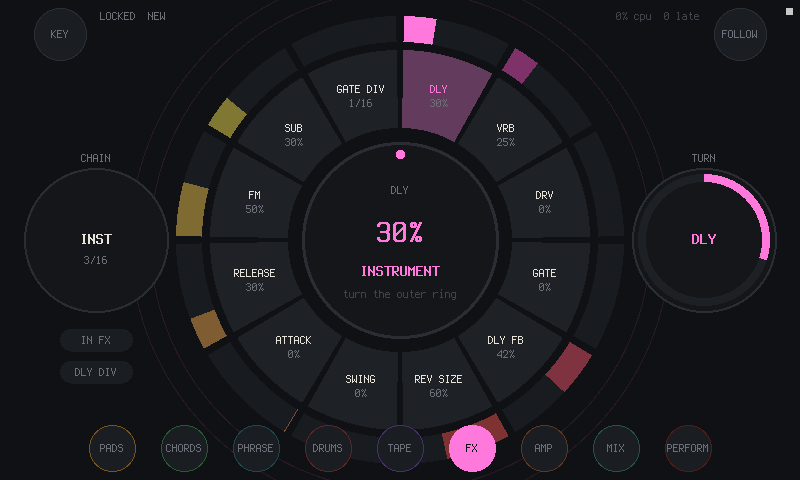
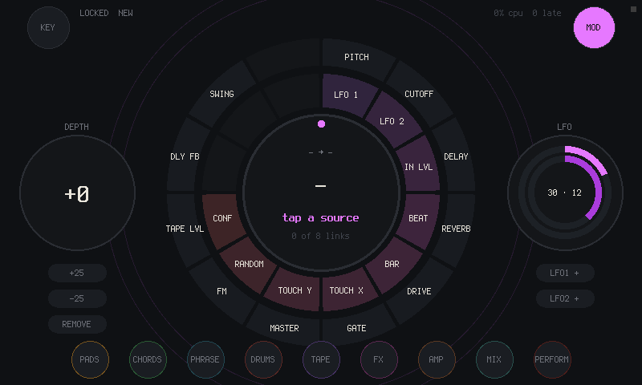
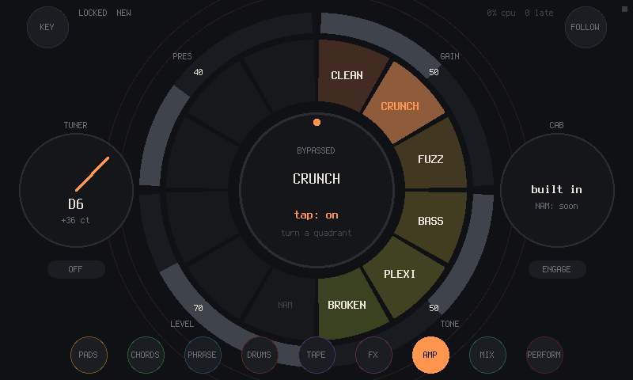
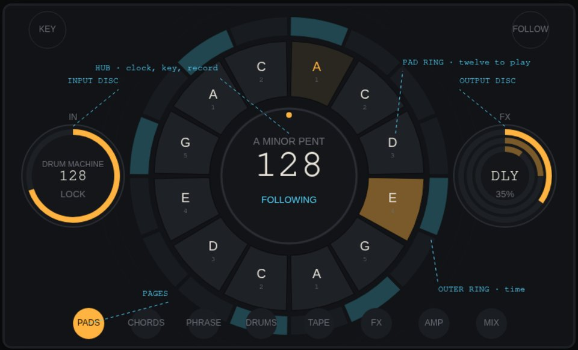

Follow instrument · Raspberry Pi 4 + 7" touchscreen
RING
A round touch instrument that listens to the music coming in, locks its clock to the beat, and lets you play along on top.
Runs on a Linux desktop today. The Raspberry Pi image builds and is being tested on the device now. Free software, GPL-3.0.

What it does
Plug a drum machine, a band or a record into it. RING hears the tempo and where the bar starts, and what you play on the screen lands in time. Every page is a ring: tap to play, drag along a ring to strum or set an amount, turn the middle to transpose.
Follows the beat
It listens to the input, finds the tempo, the beat and the downbeat, and locks to them. Tap tempo and nudge when you want to lead.
Pads and chords in the key
Twelve scale pads around the middle, the chords of the key on a strum ring. HEAR KEY tells you the key of what's coming in.
Drums, phrases, tape
Twelve synthesized drums with eight patterns, four melody phrases, four loop layers that stay on the bar.
Effects and an amp
Delay and gate on the clock, reverb, drive, an amp with six voicings and a tuner. Repeat, stutter, tape stop and kills to play live.
Plays with other gear
MIDI in and out (notes, clock, start and stop), and Ableton Link for tempo and phase over the network.
Keeps your work
Twelve project slots, twelve scenes, undo, autosave, and what comes out bounced to WAV.
Screens







Drawn first
Every screen was drawn before it was built, in one language. The hub is the clock and the key, a ring of twelve around it is whatever you play, the outer ring is time, and the two discs are the chain: input on the left, output on the right.
The design sheet has every screen with notes. The mockup is the first sketch that made sound, in a browser.

Get one
What you need
RING is software; there is nothing to order. It runs on parts you can buy:
- a Raspberry Pi 4 and its power supply
- the official Raspberry Pi 7-inch touchscreen (800 × 480)
- a USB audio interface with an input, such as TWOFOLD
- a microSD card of 8 GB or more
TWOFOLD, the matching sound card
ESP32-S3 · USB audio · made in Haifa
An audio interface by the same maker. The Pi image picks it up by itself. Write and ask about price and shipping.
Email WhatsApp TWOFOLDBuild it yourself
Everything is open: the code, the script that makes the Pi image, the design sheets.
Read the guideTry it
On a Linux computer first: the same instrument in a window, with the mouse as one finger.
sudo apt install build-essential libsdl2-dev libasound2-dev git clone https://github.com/willbearfruits/ring cd ring make run
Play something into your audio input and watch FOLLOW lock. F1..F8 jump between pages, Esc quits.
Then the Pi: make image builds a Raspberry Pi OS image with RING in it (Docker, about half an hour the first time). Write it to the card with Raspberry Pi Imager, connect the touchscreen and the sound card, and it starts straight into RING. A ready image will go on the Releases page once it has been played on a Pi. The Pi notes have the rest.
Status
Works on a Linux desktop: it builds, runs and passes its checks.
The Pi image builds.
On the Pi with the touchscreen it is being tested now; until that's done, treat the Pi side as untested.